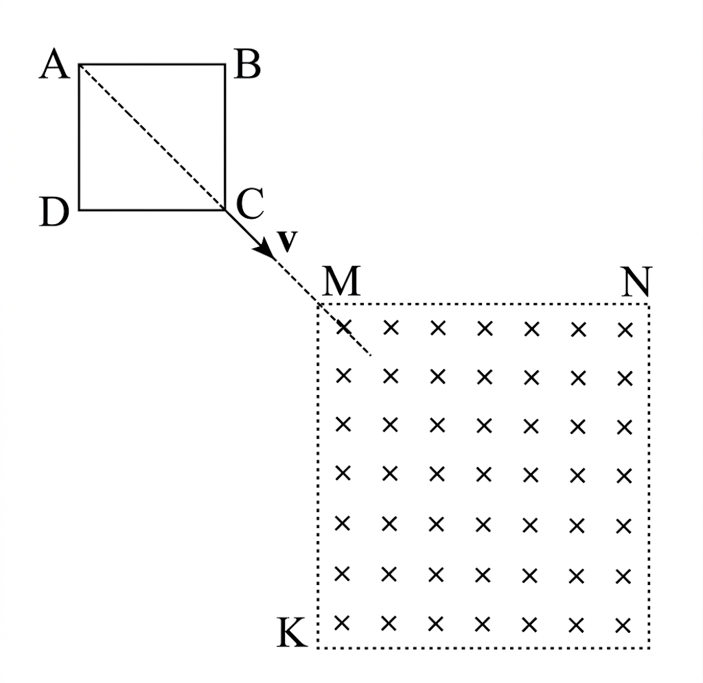

שאלה 5
בתרשים שלפניכם מוצגת מסגרת ריבועית ABCD. המסגרת עשויה תיל מוליך ואחיד שהתנגדותו הכוללת היא R.
מושכים את המסגרת במהירות קבועה שגודלה v וכיוונה לאורך המשך האלכסון AC של הריבוע, כמתואר בתרשים.
באזור ששניים מגבולותיו הם MN ו-MK המאונכים זה לזה, יש שדה מגנטי אחיד שגודלו B, וכיוונו אל תוך הדף (ראו תרשים).
ברגע t0 = 0 הקדקוד C של המסגרת מגיע לקדקוד M של אזור השדה המגנטי. צלעות הריבוע AB ו-AD מקבילות בהתאמה לצלעות MN ו-MK של אזור השדה המגנטי. ברגע t = T, הקדקוד A מגיע לקדקוד M.
t הוא רגע כלשהו בין הרגע t0 לבין הרגע T.
מדוע זורם בתיל זרם ברגע t?
האם כיוון הזרם בתיל ברגע t הוא בכיוון התנועה של מחוגי השעון או בכיוון המנוגד לכיוון התנועה של מחוגי השעון? נמקו.
(8 נקודות)
בתת סעיפים (1)-(3) שלפניכם בטאו את הגדלים ברגע t באמצעות נתוני השאלה (B, v, R, t) או באמצעות חלק מהם.
השטף המגנטי דרך הריבוע התחום על ידי המסגרת.
הכא"מ המושרה בתיל.
עוצמת הזרם בתיל.
(20 נקודות)
האם בפרק הזמן שבין t0 ל-T עוצמת הזרם במסגרת היא קבועה? נמקו. (5.33 נקודות)
